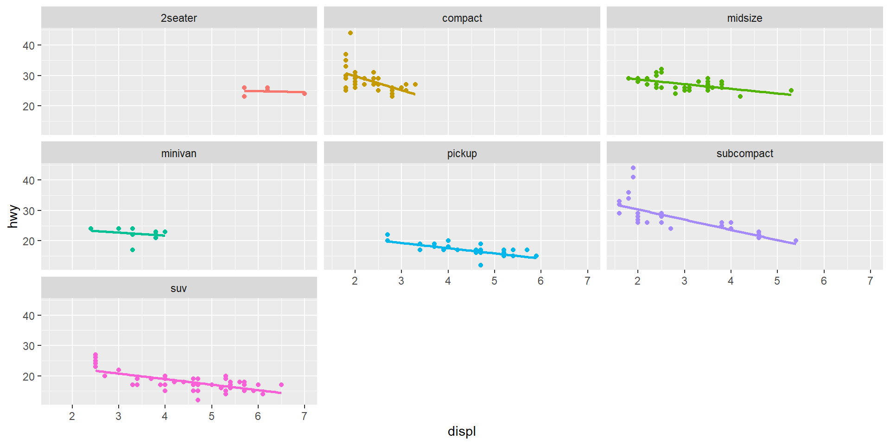
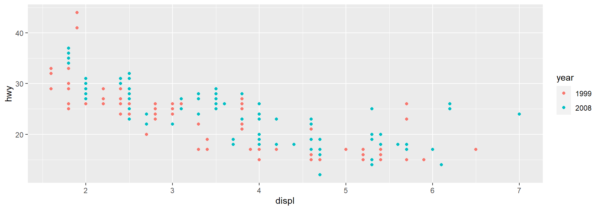

[1] 42025-04-13
Quarto enables you to weave together content and executable code into a finished presentation. To learn more about Quarto presentations see https://quarto.org/docs/presentations/.
When you click the Render button a document will be generated that includes:
When you click the Render button a presentation will be generated that includes both content and the output of embedded code. You can embed code like this:
[1] 4List the main bullet-point explanations for the diagram.
flowchart TB
A[Start] --> B{Decision}
B -->|Yes| C[Action 1]
B -->|No| D[Action 2]
C -->|Yes| E{Result}

| class | Average_disp | Standard_deviation |
|---|---|---|
| 2seater | 6.160000 | 0.5319774 |
| compact | 2.325532 | 0.4522735 |
| midsize | 2.921951 | 0.7185096 |
| minivan | 3.390909 | 0.4526689 |
| pickup | 4.418182 | 0.8285735 |
| subcompact | 2.660000 | 1.1024571 |
| suv | 4.456452 | 1.0658055 |
# A tibble: 6 × 11
manufacturer model displ year cyl trans drv cty hwy fl class
<chr> <chr> <dbl> <int> <int> <chr> <chr> <int> <int> <chr> <chr>
1 audi a4 1.8 1999 4 auto(l5) f 18 29 p compa…
2 audi a4 1.8 1999 4 manual(m5) f 21 29 p compa…
3 audi a4 2 2008 4 manual(m6) f 20 31 p compa…
4 audi a4 2 2008 4 auto(av) f 21 30 p compa…
5 audi a4 2.8 1999 6 auto(l5) f 16 26 p compa…
6 audi a4 2.8 1999 6 manual(m5) f 18 26 p compa…This text is also used for self check.
The foundations of appealing presentation is to use more infographichs.

Thank You!
Any Questions?